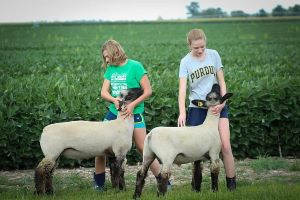

Bear Lake County 4-H and FFA Fair Activities Will Continue as Normal
By Bear Lake County Extension Office | Jul 1, 2020
The Bear Lake Junior Livestock Committee and 4-H Personnel met Thursday evening to make plans to move forward with a reduced version of the fair.
County Commissioners realize the kids have put in countless hours raising and working with their animals to be ready for the fair and feel we can safely have all the 4-H and FFA activities. The fair is a culminating event that marks the end of countless hours of hard work, effort, and learning. 4-H and FFA livestock projects effectively help youth develop critical life skills such as accepting responsibility, getting along with others, setting goals, decision making, and interpersonal skills.
The activities will be held August 11-15. The 4-H Horse Show will kick off the events and will be held Tuesday morning. On Thursday morning, the youth will exhibit their swine and lamb projects followed by poultry and rabbit shows in the afternoon. The evening will finish with the 4-H Style Review. The beef show will be held Friday morning, followed by the dairy show. After lunch the “best of the best” will compete in the Round Robin, crowning the overall livestock showman.
The youth will be judged on their showmanship ability and the quality of their animals. The 3rd Annual Cupcake Wars with the theme “Disney” will take place Friday following the Round Robin. The evening will round out with the 4-H Dog Show. Saturday will be the traditional Junior Livestock Sale and Buyers Brunch. It has been reported that this would be a virtual sale this year. That is not the case. It will be a live auction as usual.
We are making plans to accommodate those who would like to participate in the sale without being in attendance. Please contact the Extension office for details.
We are happy to say that all the kid’s projects; sewing, crafts, arts, science, cooking, shooting sports, and school projects will be displayed.
Plans are in place to follow Stay Healthy Guidelines and local recommendations. All events are open to the public. The youth have spent a large amount of time on these projects and would greatly appreciate your support August 11-15, 2020. Look for a more detailed schedule in the near future.